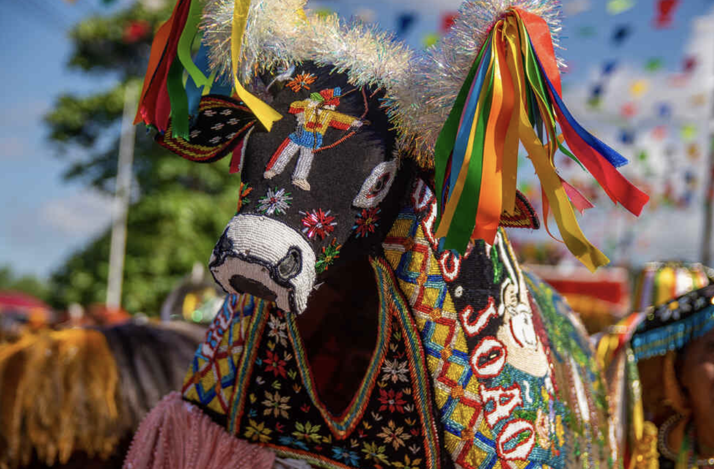

O folclore brasileiro é o conjunto de tradições, mitos, lendas, festas e costumes que formam a identidade cultural do país, misturando influências indígenas, africanas e europeias, especialmente portuguesas.
